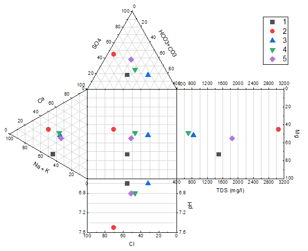
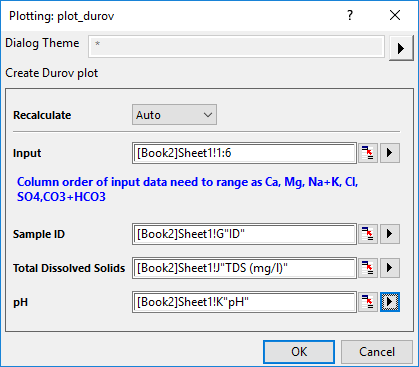

Durov-Diagramm
Durov-Diagram

Datenanforderungen
Ein Durov-Diagramm ist eine Alternative zum Piper-Diagramm, das ebenfalls ein spezieller Diagrammtyp zur grafischen Darstellung der Chemie von Wasserproben ist. Das Durov-Diagramm basiert auf dem Prozentanteil der Hauptionen in Milliäquivalenten in Wasserproben. Die Werte der Kationen und Anionen werden auf zwei separaten dreieckigen Feldern gezeichnet und die Datenpunkte werden auf ein quadratisches Gitternetz unten auf der Grundfläche von jedem Dreieck projiziert. Außerdem ermöglicht das Durov-Diagramm den direkten Vergleich von zwei weiteren Grundwasserparametern, pH und Abdampfrückstand (TDS).
Origins Durov-Diagramm wird aus Arbeitsblattdaten mit mehreren Spalten erstellt. Jede Spalte enthält den Prozentwert von jeder Ionengruppe. Die Spaltenordnung ist kritisch und sollte sein:  . Der Prozentwert jeder Kationengruppe wird auf Grundlage der Gesamtkonzentration der Kationen von Kalzium, Magnesium und Natrium plus Potassium berechnet; der Prozentanteil von jeder Anionengruppe basiert auf der Gesamtkonzentration der Anionen von Sulfat, Chlorid und Karbonat plus Hydrogenkarbonat.
. Der Prozentwert jeder Kationengruppe wird auf Grundlage der Gesamtkonzentration der Kationen von Kalzium, Magnesium und Natrium plus Potassium berechnet; der Prozentanteil von jeder Anionengruppe basiert auf der Gesamtkonzentration der Anionen von Sulfat, Chlorid und Karbonat plus Hydrogenkarbonat.
Diagramm erstellen
Markieren Sie die Quelldaten und öffnen Sie den Dialog plot_durov durch eine der folgenden Methoden:
- Wählen Sie Zeichnen > Spezialisiert: Durov im Hauptmenü.
Der Dialog plot_durov

| Neu berechnen |
Bedienelemente zur Neuberechnung der Analyseergebnisse
Weitere Informationen finden Sie unter Analyseergebnisse neu berechnen.
|
| Eingabe |
Legen Sie den Eingabedatenbereich fest. Die Spaltenordnung sollte folgendermaßen aussehen Ca, Mg, Na+K, Cl, SO4, CO3+HCO3. |
| Sample-ID |
Legen Sie die Spalte fest, die für Sample-ID verwendet wird, fest. Diese Spalte wird als Symbolfarbe und Indexspalte der Form im Durov-Diagramm verwendet, und diese Spalte stellt die Beschriftungen für die Punkt-für Punkt-Legende. |
| Gelöste Feststoffe gesamt |
Legen Sie den Datenbereich für die Menge der insgesamt gelösten Feststoffe fest. Diese Spalte wird verwendet, um gegen das Mg-Ion zu zeichnen. |
| pH |
Legen Sie die Spalte fest, die die pH-Werte der Wasserproben speichert. |
Vorlage
Durov.OTPU (installiert im Origin-Programmordner).
Bedienelemente
Drei Arbeitsblattvorlagen werden bereitgestellt, um die ursprünglichen Konzentrationsdaten in Prozentwerte umzuwandeln (1~100 normieren) und sie gemäß der Datenanforderungen für das Durov-Diagramm zu strukturieren.
- Standardmäßig sind alle seitlichen Layer mit dem Hauptlayer "Layer1" verknüpft, dem quadratischen Feld in der Mitte. Wenn Sie die Position eines der Unterlayer verändert werden soll, können Sie zur Registerkarte Achsen verbinden des Dialogs Details Zeichnung gehen, um die Verknüpfung aufzuheben und den Layer zu verschieben.
- Wenn Sie die Verknüpfung zwischen Layern nicht aufheben möchten, können Sie den Dialog Layereigenschaften über das Menü Format: Layer aufrufen und zur Registerkarte Größe und Performance für den Hauptlayer gehen. Ändern Sie den Wert im Textfeld Links oder Oben.
Im Fall des unteren und linken rechteckigen Feldes, Cl vs. pH und TDS(mg/L) vs. Mg ist es möglich, diese optional nicht zu zeichnen, wenn Sie die Elemente Abdampfrückstand und pH im Dialog plotdurov nicht festlegen.
Ein benutzerdefinierter Datensatz kann verwendet werden, um Farbe/Form/Inneres der Symbole im Piper-Diagramm zu indexieren. Sie können auch die Inkrementliste der Farbe, Form oder des Inneren benutzerdefiniert anpassen. Dies tun Sie auf den Registerkarten Inkrementeditor, Formliste bzw. Liste Innen im Dialog Details Zeichnung.